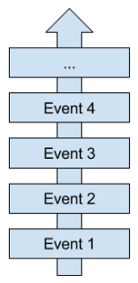

POURQUOI UTILISER CQRS ET ES ?
Dec 20, 2016
Actuellement, j’entend de plus en plus parler de CQRS et CQRS/ES : par mes collègues autour de la machine à café, lors d’entretiens techniques, sur Twitter, les blogs, etc.
Le principe du Command and Query Responsability Segregation (CQRS) est de séparer modèles d’écriture et modèles de lecture. L’Event Sourcing (ES) quant à lui consiste à sauvegarder des événements au lieu d’entités, pour reconstruire une entité il faut agréger des événements. Exprimés de cette façon, ces concepts semblent plutôt simples à comprendre, mais les aspects techniques peuvent vite les rendre complexes à appréhender et implémenter.
Alors pourquoi choisir de modifier la façon dont nous représentons nos modèles de données ?
Si vous lisez attentivement un livre sur le Domain Driven Design (dont découle CQRS et ES), la réponse que vous obtiendrez sera : tout dépend de votre métier et de vos besoins.
PRENDRE UNE DÉCISION ET DÉCRIRE UN CHANGEMENT
Pour comprendre un des avantages de CQRS, il faut se focaliser sur notre mode d’expression oral.
Imaginons qu’à un instant T je réside à l’adresse A, puis je déménage à l’adresse B. On peut dire qu’à T+1 je réside à l’adresse B.
Ici je représente une entité et mon adresse est une de mes propriétés. Un système de type CRUD (Create Request Update Delete) remplace mon adresse A par une adresse B, ce qui est fondamentalement vrai et simple à comprendre dans cet exemple. Cependant, le CRUD impose de me connaître en tant qu’entité : mon adresse n’est sans doute pas la seule chose qui me caractérise, on peut penser à mon nom, prénom, âge, sexe, taille, poids, etc. On observe une forte complexité accidentelle pour un changement d’état qui est pourtant simple. Mon poids n’a pas d’influence sur le choix de ma nouvelle adresse mais il est connu, et il doit être fourni lors de mon changement d’état.
De plus, avec le CRUD je ne mets pas réellement en avant l’action qui me fait changer d’adresse : mon déménagement. Les deux informations nécessaires pour me faire déménager sont mon identité et ma nouvelle adresse : ceci est ma commande “déménage” dans une architecture CQRS. Ensuite, mon identité et mon adresse actuelle sont sans doute les seuls éléments nécessaires pour prendre la décision de déménager. C’est une description partielle de mon état, mais adaptée à ma prise de décision, ceci est ma query dans une architecture CQRS.
Vu de cette façon, le CQRS semble donc plus proche de la façon dont nous raisonnons naturellement. On peut donc facilement exprimer les gestes métiers issus de l’Ubiquitous Language dans le code. Cette approche s’adapte bien avec une pratique comme le Behavior Driven Development (BDD), une action décrite dans un scénario de test se traduit naturellement par un commande envoyée au système.
Alors CRUD ou CQRS ? Quel est le niveau de complexité de votre métier ? Voici une réponse possible :
| Complexité métier / Architecture | Simple | Complexe |
|---|---|---|
| CRUD | Adapté | Complexité accidentelle |
| CQRS | Sur-qualité | Adapté |
LA MÉMOIRE DES ACTIONS
Est-il important de savoir quelles actions ont été menées sur votre système ? Cela peut être le cas dans certains métiers comme le e-commerce : ceci permet par exemple de savoir quels articles ont pu être ajoutés au panier puis retirés, et ainsi cibler les suggestions pour un client donné.
Le problème d’un système de persistance par état (utilisation d’entités) est qu’il n’y a pas d’historique des états précédents. En suivant cette logique pour mon déménagement, je sais à l’instant T je réside à l’adresse A. À l’instant T+1 je réside à l’adresse B mais je n’ai aucune trace d’un changement d’adresse.
Pourtant si vous me posez la question lors d’une conversation, je vais être capable de vous dire que je résidais à l’adresse A à l’instant T, et que maintenant en T+1 je réside à l’adresse B parce que j’ai déménagé entre temps. Notre mémoire fonctionne à la façon de l’event sourcing. Je retiens les événements qui me sont arrivés et grâce à eux je peux restituer mes états aux instants T et T+1.

Là encore, cette pratique s’adapte bien au BDD. Quand vous définissez l’état de votre système, vous décrivez les événements qui se sont produits.
Pour tester une architecture CQRS/ES avec le BDD, vous ajoutez donc un ensemble d’événements dans votre event store. Puis vous lancez une commande et vous vérifiez ensuite le comportement attendu (levé d’une exception, mise à jour des projections, etc.). Tester ce type d’architecture avec une approche métier est par conséquent très simple avec le langage naturel.
Scenario: Add units to an item
Given I created an item "chair"
And I added 5 units
When I add 3 units
Then I can see "chair" item with 8 units in my items list
Un autre avantage de l’event sourcing est qu’il facilite la communication entre plusieurs contextes. Un bounded context peut émettre un événement dans un event bus, tous les bounded contexts qui attendent ce type d’événement le récupéreront et l’appliqueront à leurs propres modèles. Pour autant, il n’est pas nécessaire que ces deux contextes utilisent l’ES, une simple couche d’anti-corruption peut permettre d’interfacer un système de type CRUD.
GAGNER EN PERFORMANCE ET EN ROBUSTESSE
Votre système a-t-il des attentes élevées en terme de performance ? On peut par exemple imaginer un site de billetterie en ligne, à l’annonce d’une date importante, celui-ci risque d’être pris d’assaut par les utilisateurs et nécessitent donc d’être robustes et rapides.
La majorité des systèmes ont un ratio lecture/écriture très déséquilibré, avec un nombre de lectures bien supérieur au nombre d’écritures. Gérer les relations entre plusieurs entités, notamment à l’aide de jointures, peut nécessiter d’importantes ressources et provoquer des latences.
C’est là l’un des autres avantages de CQRS, produire des modèles de lectures dédiées permet des requêtes rapides sans jointure. Chaque vue de votre application ne doit dépendre que d’un seul modèle de lecture, et ainsi effectuer une requête sur une seule table pour obtenir l’ensemble des informations qui lui sont nécessaires.
Pour rendre plus rapidement la main à l’utilisateur suite à l’exécution d’une commande, la mise à jour des modèles de lecture peut se faire de manière asynchrone. Il peut alors être nécessaire de mettre à jour les informations affichées pour assurer la cohérence des données avant que la commande ne soit réellement appliquée au modèles de lectures.
L’event sourcing permet également des gains de performance et de robustesse. Je parle ici du nombre d’opérations menées sur la base d’écriture. Un événement est un fait, il s’est produit et est irrévocable. Chaque événement est indépendant des autres, il n’existe donc aucune forme de relation entre les événements dans la base de données. On ne peut donc qu’écrire des nouveaux événements ou faire des lectures pour générer des agrégats.
Les événements suppriment également un problème inhérent aux modèles de données relationnels : vous allez devoir insérer ou mettre à jour plusieurs objets dans des repositories différents. Une écriture / mise à jour des données peut échouer en cours d’exécution, pour éviter une donnée partiellement enregistré, il faut alors mettre en place des systèmes de contextes. Ces mécanismes sont lourds à mettre en place et à gérer, ils ajoutent également une forte complexité accidentelle. L’ES vous affranchit des problèmes de cohérence des données en cas d’erreur lors de la persistance : l’écriture de votre événement fonctionne ou non.
POUR CONCLURE
Bien que CQRS et CQRS/ES soient les nouvelles architectures “à la mode”, on constate qu’il ne s’agit pas de silver bullets : elles répondent à des problématiques précises. Il est donc important de clairement identifier ses besoins avant de se tourner vers ces architectures. Si vous choisissez de les utiliser, il ne faut pas les craindre : si celles-ci sont plus complexes à appréhender qu’une architecture en couche de type CRUD, les bénéfices compensent le coût initial de mise en place.
Merci à Nadège pour ses retours.